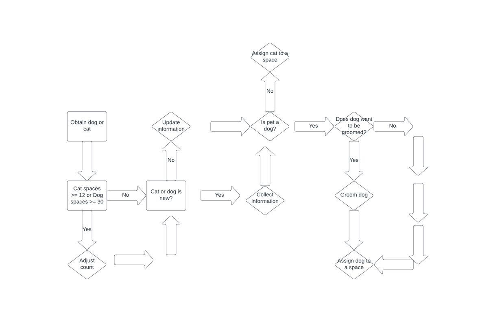
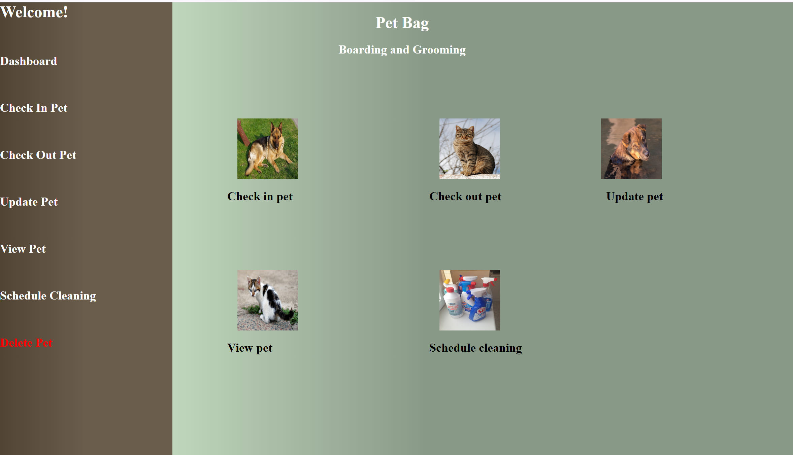
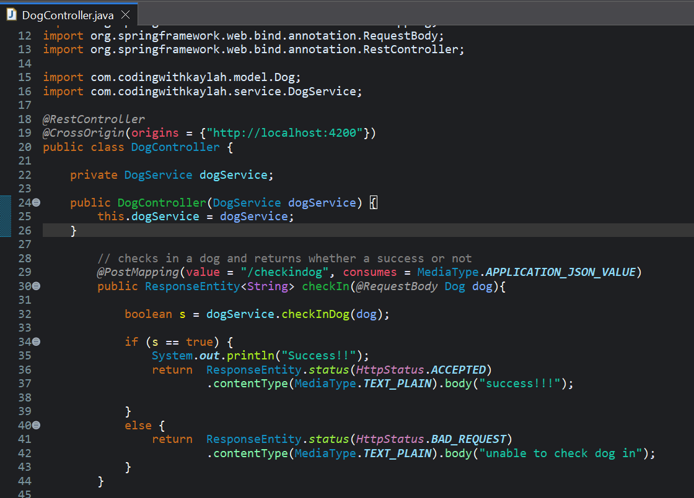
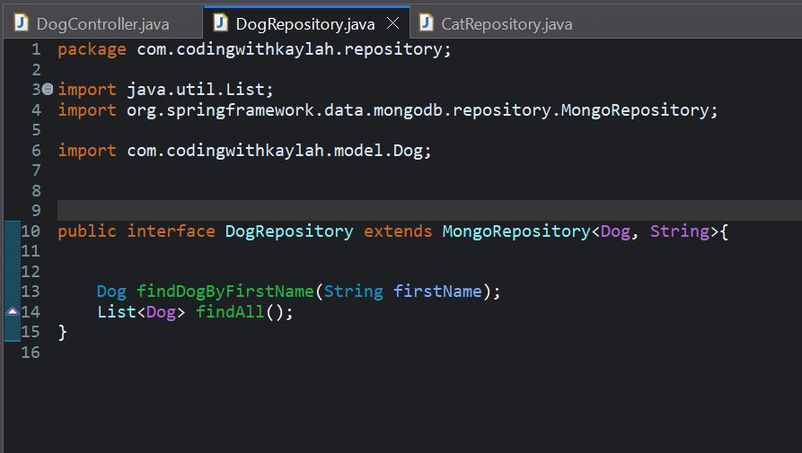
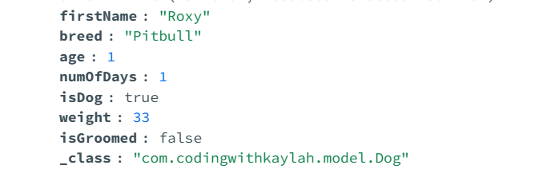

To view the review on past code, click the link below:
Link to code review
A company called
Pet BAG and Grooming wanted an easier way to manage pets and needed a management system.
In the original project, I had to create a console based system.
In this piece, I created a full stack application using Angular and Spring Boot.
For Angular, I created different pages to navigate such as the home page, check in a pet, check out a pet etc.
I used ngModel for 2 way binding so that the input values would go to the component class’s variables and then sent to the service class.
The service class would make an HTTP request to Spring Boot.
In Spring Boot, the controller class would receive the request to whichever endpoint that is in the request and then
send it to its service class which would perform logic whether that be checking a database such as MongoDB and sending
back a response to the controller and then a response back to Angular.


In the second artifact which was using a data structure to enhance the project, the data structure that was used in this project was a list to return back all of the dogs or cats. The reason a list was a good option is because it has fast random access so there will not be a lot of time spent waiting and more than one pet needed to be displayed. How it was used was it was overridden in the repository classes I had as in the original method, it returns an iterable.

In the third artifact, which was enhancing an artifact with a database, I decided to continue with the pet management system. The original project did not have a database and the company instead used paper to manage and so creating a database would be a lot more secure and faster to look pets up. How this was used was that I included MongoDB in Spring Boot, created model classes which represent values in the database and created repositories so it could access it.

Teamwork 🏢 - When collaborating in a team environment and listening to stakeholders, it is important to be open minded and have good listening skills. I bring that by considering what someone has to say and if we have a disagreement, try to find a compromise.
Data Structures 👩🏽💻 - When it comes to data structures, I am familiar with lists, sets and arrays. They are beneficial for moving data, retrieving data and reusability.
Programming Languages: 🖥️ - I am most familiar with the programming language Java and C++ having built a couple of things from a clock, a console-based pet management system and building a bubble sort algorithm in C++.
Security: 🔐 - For security, I have learned how to make input required in HTML, how to allow cross origin requests in Spring Boot and how to scan for project dependencies using OWASP Dependency Check.
Throughout these past 8 weeks, I learned quite a bit about Spring Boot and Angular.
The skills that I have developed during my coursework include passing data from Angular to Spring Boot and critical thinking.
Some strengths that were demonstrated include best practices and putting files in specific folders instead of all in one.
How this project shaped my professional goals is giving me more exposure to the different features of Angular and Spring Boot which
are valued in many job positions. It has also taught me patience and persistence. I ran into some errors that took awhile
to figure out, but I never gave up. At some points, I became frustrated, but I got off my computer, took a break and eventually
came back and solved it.
Even though there are some incomplete features like the ability for a user to login due to time constraints,
the process of trying to implement it and reading more about it helped me understand client server interactions.
Instead of implementing a login feature, I decided to develop a security mindset by implementing making
certain inputs in the HTML required. By doing this, it prevents empty or missing data which could lead to errors.
In the other classes I have taken, they shaped my professional goals by preparing me for what is to come.
The Intro to Scripting and Java classes helped teach me the fundamentals of Python and Java which is
important because if you do not know the fundamentals, you cannot progress to more advanced concepts.
Software Development Lifecycle class has taught me that there is more to Computer Science than just programming.
A lot of planning goes into projects along with teamwork. User Design class has taught me to pay attention to what
potential users and stakeholders want in the product and to emphasize with them.